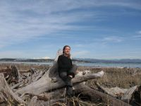
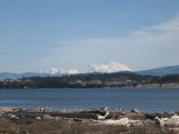
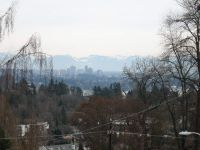
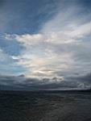
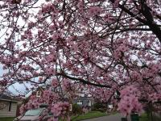
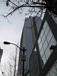
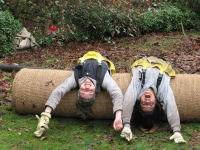
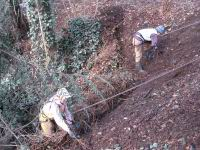
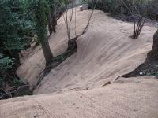

|
|
|
Ангарск - Америка 05.02.2007 ... А тут мороз ударил! -13, вроде пустяки, да, а нифига, когда ты в осеннем пальто... Да и -13 в Питере, это все наши -25! Сыро и ветер... Но это, на самом деле, ни сколько не омрачает моей радости, потому, что здесь идет снег и город выглядит просто волшебно! Я уже третий день хожу просто в шоке. Разве может быть так красиво?! ... ... Зашла в магазин сноубордов - в шоке... Так дешево... 07.02.2007
16.02.2007 03.03.2007 Вот, наконец, я добралась до компьютера, точнее он добрался до меня с далеких Гавайских островов, вместе с моими homestayми. Они отдыхали там целую неделю (после всех их рассказов и фотографий моя мечта - Гавайи! ), а дом был в моем полном распоряжении! Классно, просыпаешься утром, открываешь холодильник, в котором полно всякой всячины: особенно соков, фруктов и овощей, т.к все этом доме предпочитают здоровую пишу. Потом выбираешь чай, один из многих, завтракаещь, смотрищь на птичек и белочек, прыгаюших по расцветаюшим деревьям в саду, и на работу+ Да, работа это пи.......! Началась она внезапно, на втрой неделе здесь прибывания, и продолжается по сей день с 7.30 до 17.00 с выходными субб, воскрес и зачастую понед. И я конечно не против восстанавливать американскую природу, бороться с ростениями, которые были привезены когда-то давно с различных уголков мира и сейчас мешают местным видам расти и развиваться, но здещний феминизм меня уже немного достал... Женщины пашут наровне с мужчинами, сильный пол никогда не предложит помоши. А самое главное непонятно по какому принципу нас разделили на бригады (три группы по пятъ человек + бригадир), и так получилось, что в двух командах по три парня, а в одной всего один (не сложно догадаться в какой я, с моим-то везением! ), да и то, он кажется - гей! Ну а если в общем, тут здорово! Правда похолодало+. 0 , +5, идет дождь и снег. Но это нисколько не омрачает моей радости. Работать стало еще веселее: сначала откопай вредноносное растение, а потом выкопай его+ На работу гоняю на роликах (круто, почи все время под горку, 1 км), с работы обычно на автобусе (потому, что сильно устаю, темновато и скользко). Плюс работы в том, что мы вкалываем в разных местах города или пригорода каждый день. Утром встречаемся в офисе и едем куда-нибудь (хорошая возможность узнать окрестности). По выходным работаю на благо ББТ, у Ариадны дома, добираюсь туда на пароме на остров, через залив. Просто потрясающий вид открывается на весь город, downtown (небоскребы), горы+ Народ здесь, что надо - тусовый! Так что не обходится без игр (первый раз в жизни играла в бейсболл - круто! Наша лапта, только бегать нужно по кругу); ходила в парк развлечений (смотрела тропических бабочек); в кино; на брейк-данс контест (ну негры когнечно отжигают по полной!!!); различные домащние вечеринки-пьянки и солидные-парти (типа Оскар-парти, смотрели церемонию вручения ). А еше я хотела прорваться в клуб, на Drum & Base , но мало того, что туда до 21 не пускали, так еще и билетов не было, а когда я как всякий, нормальный русский, в таком случае, попыталась просто перепрыгнуть через перегородку, меня выгнали+ Куто было! Америка! Вот, также, попробовала индийскую (5+), мексиканскую(4 - очень остро), тайваньскую (5+) и греческую(4 - странно) кухню в различных реторанах города. Да плюс америкосии в том, что здесь полно эмигрантов, умеющих хорошо готовить... А еще+ SNOWBOARD!!!!!!!!!!!!!!!! В один прекрасный, выходной день, мой хороший русско-американский друг, любезно предоставил мне снаряжение и вывез в горы! О, это было супер! Всего час на машине, и ты перемещаещься из лета в снежное царство зимы+ Затем снегоступы (нам незачем подемники - мы русские) и поехали! Эх, как дома! Попробовала себя на стенке пайпа - не получилось+ Но понравилось! Короче, все пучком! Купила фотоаппарат - скоро будут фото!
  
16.03.2007 :: Крейзи американ!!!!!
   ГОРОД только на первый взгляд такой огромный. На самом деле, он вполне, вполне даже ходибильный, а еше лучше - проезжаемый на велике (в моем случае на роликах). А если вдруг захочится воспользоваться обшественным транспортом, то прийдется для начала проверить расписание движения автобусов в интернете, затем простоять минут 20 на остановке, т.к расписание было некорректным, и ты опоздал, потом ты попадаешь в салон автобуса, едушем со скоростью 40 км/ч , с остановками каждые 50 м., затем пересаживаешься, и плюс еше 20 мин ожидания (если ты счастливчик) …Короче говоря - все здесь предпочитают передвигаться на великах. Причем что для этого сушествуют все условия: Огромное количество спец трасс, повсюду вело-парковки, мастерские… И штрафы за проезд без шлема.    PEOPLE впечатляет своим разнообразием… Черные, белые,
желтые, красные (и это не только говоря о цвете кожи, а еше и о волосах)…
Одеты - кто как! Но в основном, очень неформально и спортивно. Сидят
на газонах, ступенях и тротуарах. Спят на улицах и в обшественном транспорте.
Кричат и разговаривают сами с собой. Любят домашних животных больше,
чем детей. Полно вегитерианцев. РАЗВЛЕКУХА - просто отдельное письмо! Это вам не наша деревня (хотя,
что это я)... Здесь есть все!!! Но так как я на все не успеваю, то
просто гуляю, катаю на ролах, велике, хожу по гостям, в кино. Вот,
кино - это интересно... Американцы не переводят иностранные фильмы на английский,
а просто добавляют субтитры, что существенно затруднило просмотр отличного
итальянского фильма (наменированного на оскар) "Pen's labyrinth".
20.04.2007 :: 10 признаков, что ты живешь в американском городе Сиэттл : 1.
Мало кто смеется над твоими шутками. Да, даже несмотря на некоторые культурные неудобства, здесь по прежнему круто!!!
Следующие письма и фото - здесь Марина Леушина. 2007.
* при наведении курсором мыши на фото, появляется название фото |